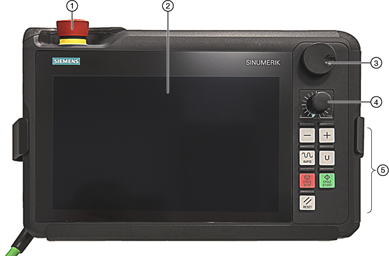

Das mobile Handheld Terminal HT 10 vereinigt die Funktionen einer Bedientafel und einer Maschinensteuertafel. Damit haben Sie die Möglichkeit, maschinennah zu beobachten, zu bedienen, zu teachen und zu programmieren.
Das HT 10 ist mit der Bedienoberfläche "SINUMERIK Operate Generation 2" bedienbar.
① | Not-Halt-Taster |
② | Display / Touchscreen |
③ | Handrad (optional) |
④ | Override-Drehschalter |
⑤ | LED-Funktionstasten |
Bedienung
Das vollgrafische berührungssensitive 10,1"-TFT-Farbdisplay des HT 10 bietet eine Touchbedienung. Die Auflösung von 1280 x 800 Pixel ist für die Nutzung von "Display Manager" geeignet.
Für das Verfahren der Achsen können Sie entweder das Handrad oder die mechanischen Verfahrtasten ("+"/"-") nutzen.
Das HT 10 ist mit einem NOT-HALT-Taster und einem zweikanaligen dreistufigen Zustimmtaster ausgestattet.
Sie haben die Möglichkeit, eine externe Tastatur anzuschließen.
Sie können anwenderspezifische Tasten projektieren.
Anwenderspezifische Tasten
Die anwenderspezifischen Tasten sind frei belegbar. Die Tasten können Sie mit eigenen Texten in der jeweiligen Landessprache beschriften.
| | Maschinenhersteller Beachten Sie hierzu die Angaben des Maschinenherstellers. |
Integrierte Maschinensteuertafel
Das HT 10 verfügt über eine integrierte MCP. Sie besteht aus mechanischen Tasten (z. B. Start und Stopp) sowie als Softkeys nachgebildete Tasten.
Die einzelnen Tasten werden im Kapitel "Bedienelemente der Maschinensteuertafel" beschrieben.
| Hinweis |
PLC-Nahtstellensignale, die über die Softkeys des Maschinensteuertafel-Menüs ausgelöst werden, sind flankengesteuert. |
Zustimmtaster
Das HT 10 verfügt über einen Zustimmtaster. Sie haben so die Möglichkeit, die Zustimmfunktion bei zustimmungspflichtigen Bedienhandlungen (z. B. Einblenden der Verfahrtasten) auszulösen.
Die Zustimmtaster sind für folgende Taster-Positionen ausgeführt:
Losgelassen (keine Betätigung)
Zustimmung (mittlere Stellung) - Zustimmung Kanal 1 und Kanal 2 liegt auf dem gleichen Schalter.
Panik (ganz durchgedrückt)
Verfahrtasten
Um die Achsen Ihrer Maschine über die mechanischen Verfahrtasten zu verfahren, muss die Betriebsart "JOG" oder "MDA", die Funktionen "REF. POINT" oder "TEACH IN" angewählt sein. Je nach Einstellung müssen Sie den Zustimmtaster betätigen.
| | Maschinenhersteller Beachten Sie hierzu die Angaben des Maschinenherstellers. |
| Hinweis |
Sie können die Achsen Ihrer Maschine auch über die Touchbedienung verfahren. |
Virtuelle Tastatur
Zur komfortablen Eingabe von Werten ist eine virtuelle Tastatur vorhanden.
Kanal umschalten
In der Statusanzeige haben Sie die Möglichkeit, durch Touchbedienung der Kanalanzeige den Kanal umzuschalten:
Im Bedienbereich Maschine (große Statusanzeige) durch Touchbedienung der Kanalanzeige in der Statusanzeige.
In den übrigen Bedienbereichen (kleine Statusanzeige) durch Touchbedienung der Kanalanzeige in den Titelzeilen der Bilder (gelbes Feld).
Im Maschinentafel-Menü, das Sie über die Anwendermenü-Taste "U" erreichen, steht der Softkey "1… n CHANNEL" zur Verfügung.
Bedienbereichsumschaltung
Durch Touchbedienung des Anzeigesymbols für den aktiven Bedienbereich blenden Sie das Bedienbereichsmenü ein.
Handrad
Das HT 10 ist mit einem Handrad ausgestattet.
Wenn Sie ein HT 10 einsetzen, können Sie die Achsen Ihrer Maschine über das Handrad verfahren.
| | Maschinenhersteller Beachten Sie hierzu die Angaben des Maschinenherstellers. |
Weitere Informationen
Weitere Informationen zu Anschluss, Inbetriebnahme und Projektierung der anwenderspezifischen Tasten finden Sie im Gerätehandbuch Handheld Terminal HT 10.